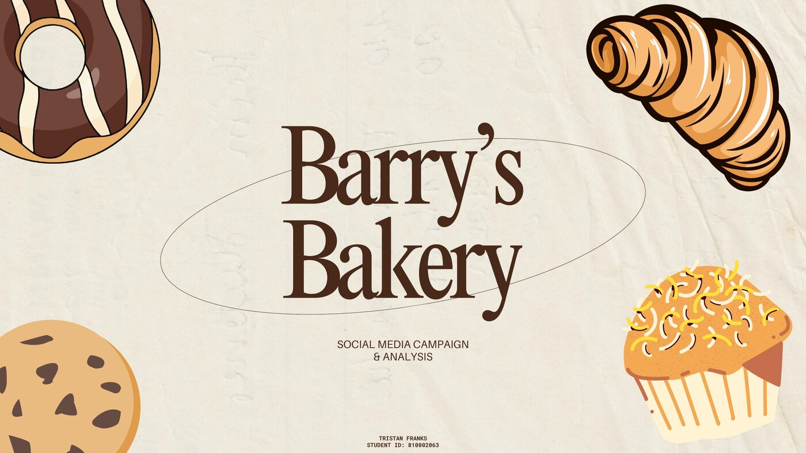
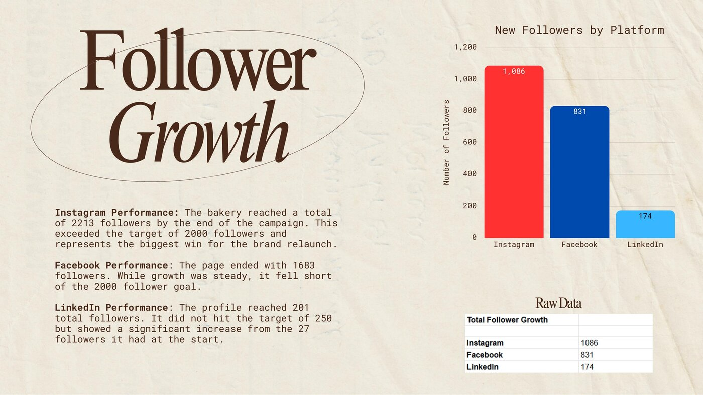
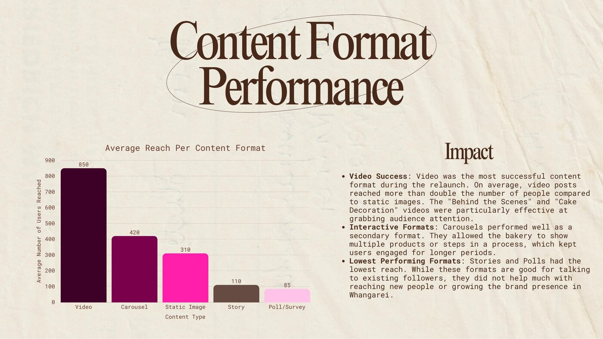
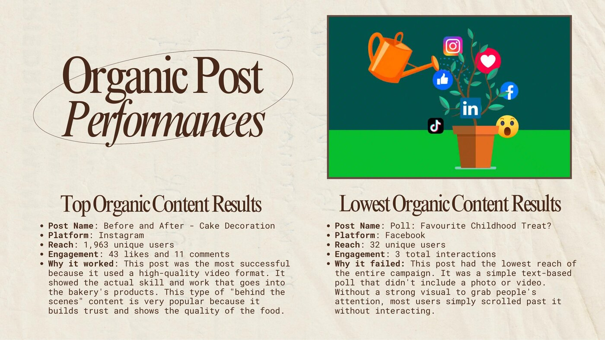

A social-dark bakery brand went 28 days without posting. This is the data-driven relaunch strategy that brought it back — and the 597% ROI it projected.

Completed as an NZIE Diploma capstone analysing a provided campaign dataset for a Whangarei bakery relaunch — not commissioned or run for a live client.
Barry's Bakery had gone quiet on social, and its connection to the local Whangarei community faded with it. The mission: a 28-day relaunch to re-establish Barry's as the primary choice for baked goods — measured on real growth, not vanity metrics.
Couples in their 20s–40s passing through, looking to try something locally famous.
Office managers at small businesses (5–50 staff), typically women in their 40s–50s, sourcing catering.
Locals wanting affordable, high-quality catering for birthdays, anniversaries, and community events.
Instagram exceeded its follower target and drove the majority of total reach — with Whangarei confirmed as the top city across every platform.
Exceeded the 2,000 target. 12,212 unique users reached — more than triple Facebook's total.
Fell short of the 2,000 goal, but posted the highest organic engagement of the three platforms.
Missed the 250 target, but a major lift from a starting base of just 27.
Across all three platforms — the headline growth number behind the ROI projection.

Averaging more than double the reach of static images, and over 300% higher than the lowest-performing formats.

Average Reach by Content Format

Best vs. Worst Performing Post
Best: "Before & After — Cake Decoration" at 1,963 reach. Worst: "Poll: Favourite Childhood Treat?" at 32 reach — no visual hook, no reach.
Modelling 3% of new followers converting to corporate customers at $300/visit, twice a year, against a $5,400 ad spend.
A relaunch isn't about posting more — it's about finding the one format the audience actually responds to, and doubling down on it.